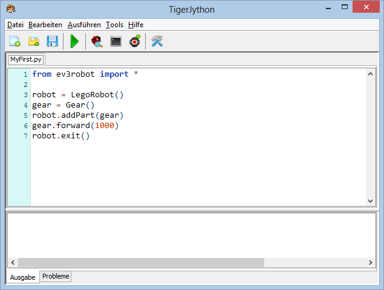
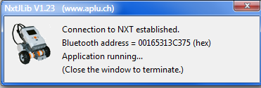

NXT Installation
Requirement: The leJOS- or LEGO-Firmware is installed on the NXT brick and the brick is switched on.
1 Connect the NXT brick via Bluetooth
In direct mode (remote control) the PC communicates with the NXT-brick during the program execution via Bluetooth. To make this work, a JAR archive from Bluecove must reside in the subfolder Lib of the folder from where you execute tigerjython2.jar. You can download this file with the following link (connection to the Internet needed):
Download bluecove-2-1-1.jar (Windows)
Download bluecove-gpl-2.1.1-SNAPSHOT.jar (Mac, Linux)To establish a Bluetooth connection, the PC and the Lego brick has to be paired. Proceed the same way you pair any other Bluetooth device (e.g. a smartphone). First check if Bluetooth is enabled both on the PC and the brick.
2 Write you first program and execute it in direct mode

